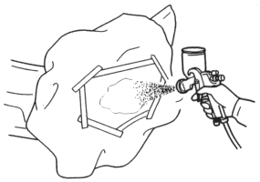
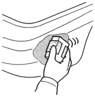
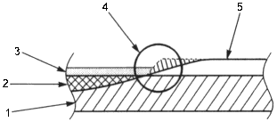

NOTE: You must do this procedure on the PP parts of the bumper and side sill panel.
- Masking
Mask the area surrounding the damage to prevent overspray from the intermediate coat.
| Use masking tape and paper. |
- Spraying top coat enamel
- Spray the top coat enamel over the surface until the primer surfacer is fully covered.
- Spray 2~3 coats to get 15~25 microns of thickness.
|

Drying
NOTE: Take care not to let the heat lamp deform the bumper during the drying process.
After spraying the top coat enamel, allow for 5~10 minutes of normal drying, then force dry it with infrared lamps or other industrial dryer.
- Polishing
Check the top coat enamel has dried thoroughly, then sand the top coat enamel.
| Use a flexible block and #600~#800~#1000 sandpapers. |
NOTE: Be careful not to sand down to the primer surfacer.

When the painting repair is almost complete, polish the top coat.
| Use #1500 sandpaper and compound. |

- Material
- Putty
- Intermediate Coat
- Sanding
- Paint Coat
- Air blowing/degreasing
| Use alcohol, a tack cloth, and wax and grease remover. |
Clean and degrease the surfaces where the masking tape will be attached.